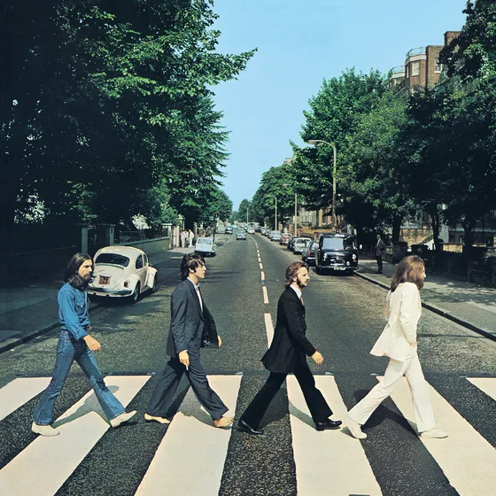

Experience
After working freelance for a total of ~11 years my projects have been all over the shop. It keeps me on my toes. Here are a few major threads:
- Website & Web App Development
This is where it all began, and it continues to this day. My degree is in "Interactive Digital Media" which was essentially a Web & Graphic design degree. On the backend I've worked with Laravel & Wordpress (PHP), Express (Node.js), FastAPI, Django & Flask (Python). For the shop window, I've written a lot of vanilla JavaScript/TypeScript, but also worked extensively with libraries like Vue & React.
I'm ok with CSS, but if you're looking for a slick, well designed UI/UX I am not your man.
- Cloud & DevOps
I have a decent amount of Google Cloud experience (APIs, BigQuery) however, I've used AWS far more. Within AWS, I rely on a lot of the classics: EC2, S3, Lambda, ECS/Fargate, SQS, SNS, WAF, CloudFormation, and more acronyms besides!
I've also worked with AWS's Step Functions as a workflow orchestration tool, as well as Prefect and Airflow.
Whilst I don't claim to be a DevOps expert, CI/CD via GitHub actions, Pre-commit checks, linting, automated testing, strong observability, etc. are a large part of every project I work on.
- Data and automation
I got a job in PPC and immediately had access to all of this data! It needed processing, turning into reports, analysis, etc. and I reached immediately for Python. I've worked with Python (including Pandas, NumPy, Polars, etc.) every since - going on ten years.
As well as workflow orchestration, I've worked with Data Lakes and Data Warehouses, AWS Athena & RedShift, BigQuery, as well as DuckDB/Parquet workflows.
Experience
- GoDaddy · Software engineer
-
This falls in with my freelancer work, but it's worth its own section after three years of almost full time
It's my job to build tools and automations for their Paid Media team. It has spanned Google Ads Scripts, AI Systems & MCPs, Web Apps and Python tools - anything to make the ads more profitable, and the team more productive.
I've probably learnt more here than anywhere else, including university!
- Freelance · Software engineer
- Digital marketing and e-commerce · E-commerce Manager
-
I started as a PPC Executive, then had a stint as a Commercial Analyst before settling as E-commerce Manager. I really enjoyed this job. It helped me understand the other side of it all - margins, stock, staffing, ROI, scaling, the lot.
It gave me experience with Google Ads, Affiliates, Display Ads, Tracking, Retargeting, A/B Testing (CRO), not to mention all of the reporting and analysis involved.
I made sure I had access to everything and automated as much as possible. Probably a little too much, in fact!
Available to hire
I'm available for freelance projects, from web development and web apps to the systems behind them, especially where a business has an operational problem that needs a dependable system built around it.
What can I help with?
Let's start with some things I don't do:
Pretty Pictures & Design: Anything heavily graphic design or art oriented, whether it's a beautiful website or graphics for print. This includes UX/UI design, logos, branding, anything like that. This stuff is a real craft, and it's worth hiring a professional.
Small business Brochure-type websites: there are people who have this down to a fine art. Use them, or maybe try AI or Squarespace.
As for things I do do
I'm better at backends, services, tooling, connecting things together.
It might be:
- A widget or calcualator for your website
- A custom web app
- Help with your existing service, website or system
- Conversion tracking (server side, or otherwise)
- Custom automation, such as automatically making Google Ads changes
- Reporting & dashboards
- Data processing & pipelines
If you've got a problem, we can work together to come up with a solution.
Then, I can build it in a reliable, maintainable manner.
Hobbies and interests
It's tempting to just talk about music here.
If I had to take five artists to a desert island I'd probably take The Smiths, The Beatles, Sam Cooke, The Kinks...then probably something operatic or classical - it would be a nice change.

The second half of this album, in particular, is a masterclass
I often attempt songs from these artists on my guitar to the dismay of my neighbours, dog and wife.
I'm also learning Spanish at a snail's pace. Yo se un pocito palabras (no idea if that's right), but I can't understand anything people say back to me, unfortunately.
I'm also into baking and growing herbs, though the twain seldom meet.
The herb thing is new. I currently have some Basil and Scallions peeking their heads above the soil and it's very exciting.
Plus just, ya know, watching Telly! Maybe it's boring, but a Tuesday eve with my wife, a glass of red (Garnacha) and an episode of Gogglebox is a real treat.
But enough about me!